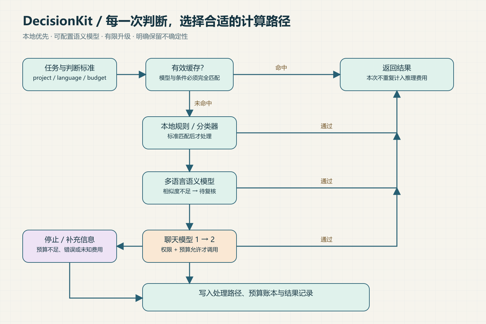
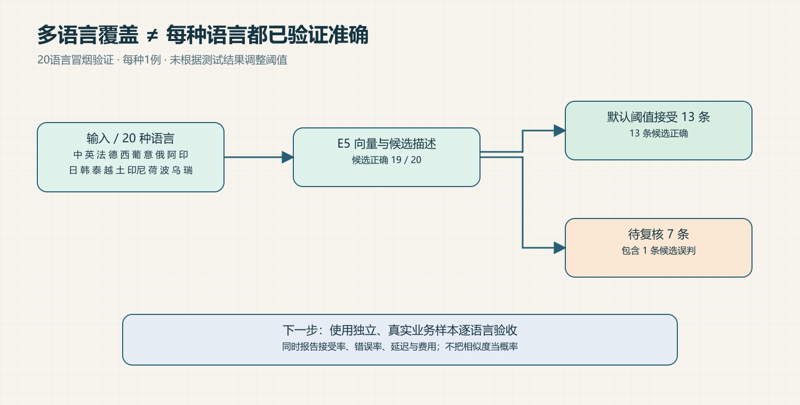
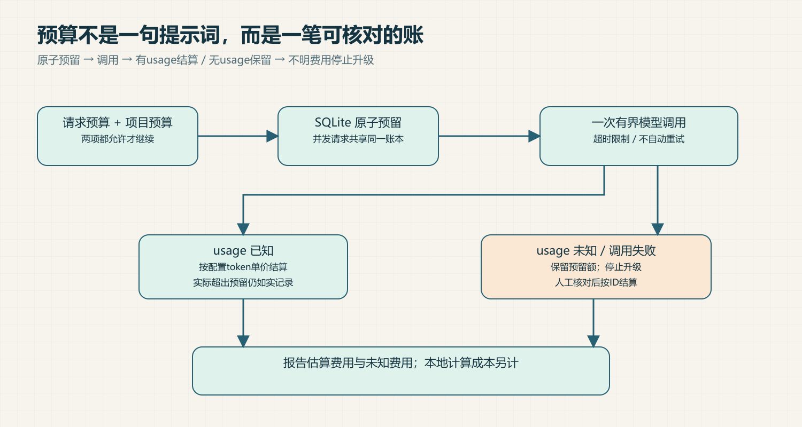

DecisionKit
Spend computation where it matters.
小机器人负责分配任务：简单工作送往小机器，困难工作进入观测站，重复任务取自档案转盘，不确定任务先在长椅等候。主视觉为概念插画，流程与测试证据见下文。
面向 AI 助手的本地优先决策插件：用明确规则、可训练分类器、多语言语义模型和按需升级，完成可检查的结构化判断。提供 CLI、Python、MCP 与本机 HTTP 接口。

已实现的能力
| 能力 |
行为 |
| 本地分类 |
Unicode字符/词特征训练，无第三方依赖 |
| 多语言语义 |
可选 E5 本地权重，超长输入拒绝静默截断 |
| 结构化判断 |
classify、check、score、extract；非分类任务使用配置的聊天后端 |
| 有限模型升级 |
最多两个兼容聊天API，本地失败后按策略调用 |
| 成本控制 |
请求预算、项目累计预算、SQLite原子预留、未知费用保留 |
| 缓存 |
精确匹配、TTL、项目/标准/模型/权限隔离 |
| 可追踪性 |
处理路径、预算账本、耗时、未解决状态 |
| 可安装交付 |
清单校验、升级备份、编辑保护与失败回滚 |
立即试用
Python 3.10+，解压后进入目录：
python cli.py --config examples/config.json decide examples/request.json
python cli.py --config examples/config.json report demo
示例已包含演示训练模型，无需联网。示例仅覆盖特定中文反馈分类，不能作为通用语义模型。安装技能：
python install.py --check
python install.py
默认安装到 ~/.codex/skills/decision-kit。支持自定义目标目录及 --upgrade；不会静默更改宿主配置。宿主是否自动调用取决于其能力与设置。
多语言从哪里来
使用 multilingual-e5-small 的跨语言向量表示。上游模型卡声明约100种语言覆盖，并指出低资源语言可能退化；这不是本插件100语言准确率保证。
python -m pip install -r requirements-semantic.txt
python fetch_model.py /absolute/models/multilingual-e5-small
权重单独下载，不塞进技能ZIP。后续加载离线运行。配置方法见 使用说明。Qwen与llama.cpp可通过兼容聊天API接入；本包没有重新训练或分发Qwen权重。

测试证据
本机已实际加载 E5，对20种语言各1条合成样例进行冒烟测试：候选答案19/20正确；默认阈值接受13条，13条正确；7条待复核，其中包含1条误判。没有据此调整阈值。
这不是独立业务基准，也不能代表各语言生产准确率。软件测试与模型测试分开记录：验收报告、原始语义结果、测试结果。
成本必须算完整

token费用来自配置单价与服务端usage，属于估算。费用未知时保留预留额并停止升级。预留上界由操作员配置，不能替代供应商硬限额；本地设备成本未测。没有基线就不宣传节省比例。
可用 evals/compare.py 在同一批标注任务上比较两份配置，同时查看完成率、正确率和费用。该工具可能实际调用付费API。
适用边界
- 决策结果不直接触发退款、删除或发送消息等外部动作。
- E5相似度、朴素贝叶斯分数都未校准；字段合法不代表语义正确。
- HTTP为本机单用户工具，项目名不是多租户认证。
- 缓存可能保存抽取出的敏感内容，数据库未加密。
- 兼容API已用本地协议测试服务验证，未进行付费供应商或Jev对照实验。
- 提供可运行插件，不宣称复刻Jev底层架构、训练出新的基础模型或普遍优于Jev。
完整使用说明 · 开源选型与许可证 · MIT License
首次配置可运行 python setup_wizard.py /path/to/new-profile，生成可直接运行的离线示例。费用对照支持按语言查看完成率、准确率和每个正确结果的估算费用。详见 使用说明。